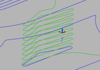
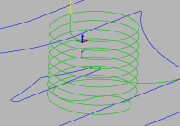

Plongée en dehors du brut
Définit le type de mouvement descendant de l'outil pour chaque profondeur de coupe.
|
Plongée en dehors du brut |
 |
 |
Pré-perçage |
Plongée |
Pour utiliser l'option Pré-perçage, vous devez définir au moins un emplacement de pré-perçage.
 |
 |
Zig-Zag |
Profil |
Remarquez les transitions lissées obtenues avec le type de rampe en zig-zag.
 |
 |
Profil lissé |
Hélice |